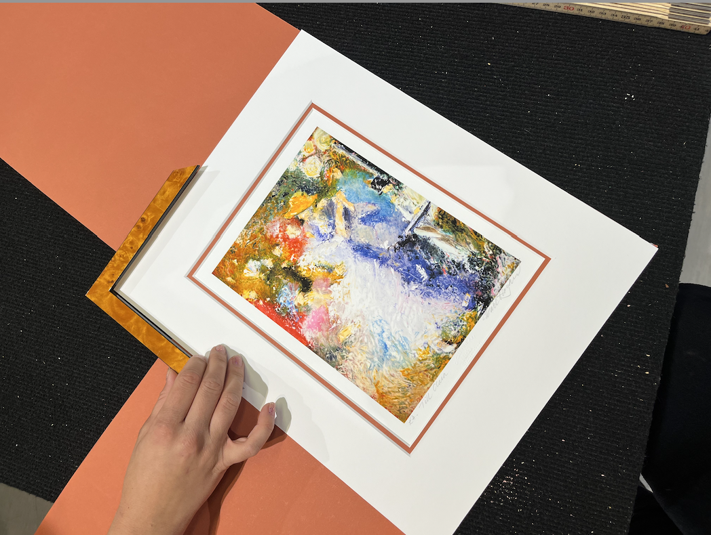
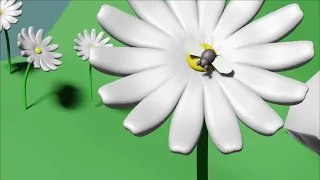
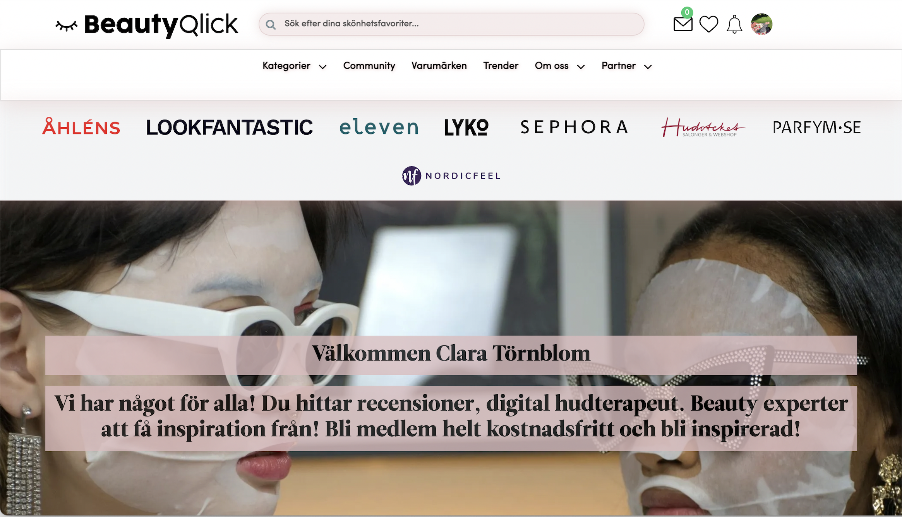
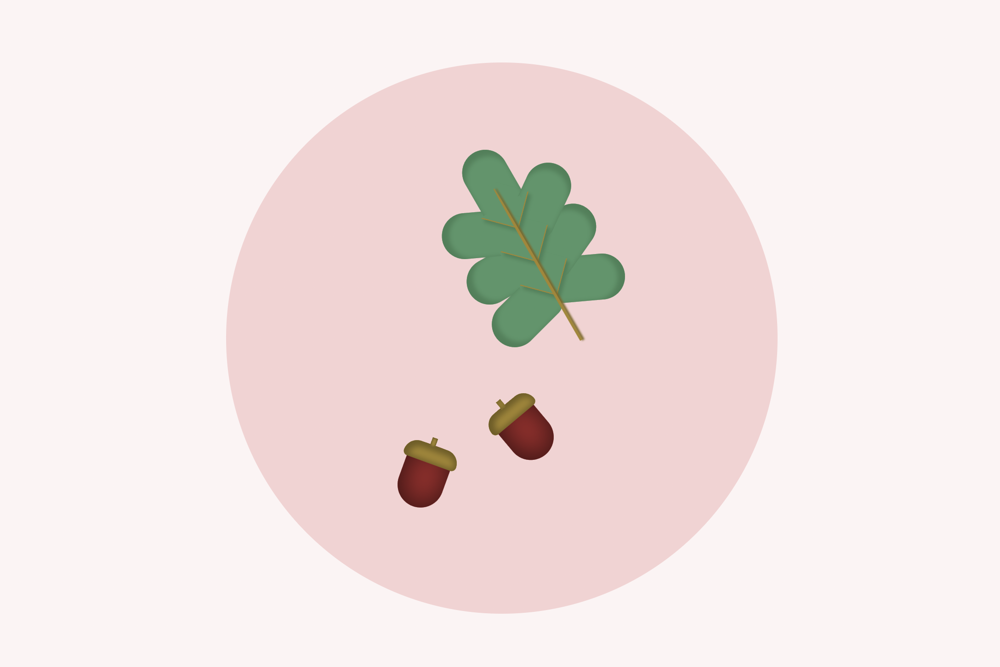

Clara Törnblom
Mina projekt
FilmR
En behov jag själv hade inför en resa till Åre med vänner. Jag utvecklade appen i samtid med utbilningen på bth
Ninris ramverk
Hur en tavla ramas in är förvånansvärt likt en webbsidas CSS. Man arbetar med färger ,rutor och millimieter marginaler för att lyfta fram konsverket. Ramade in åt betalande kunder efter deras tycke, och fick även utrymme att experimentera stiler till tavlor som ställdes ut i galleriet.
Animera och modellera i Blender
Under hösten 2023 lärde jag använda Blender för att skapa och animera olika 3d-modeller. Jag har alltid gillat att skapa och jag känner att VR, AR och 3d kommer att ta stor plats i vår vardag i frmatiden, jag ville ha en grundförståelse i hur det fungerar.
3D-Modellera
Att modellera i 3D miljö har jag utforskat i program som Blender, Unity och Pico 4 Gravity Scetch. Sistnämda är ett program i 3D miljö.
BeautyQlick
Min praktikplats under Jensen YH tiden, var på BeautyQlick.com. Jag jobbade mest med CSS, VD:n ville ha en mer sammanhängande look samt nya ideer för kundprofilerna. Arbette tills att jag började var gjort av 2-3 olika frontendare så koden och stilen var osammanghängade.
CSS konst - Examensarbete
Samtidigt som jag var på praktik på BeautyQlick jobbade jag med mity examensarbete där jag djupdök i CSS-språket och konstverk som skapas i kod, jag intervjuade utvecklare/konstnärer runt om i världen och gjorde ett eget verk ( se nedan ).
